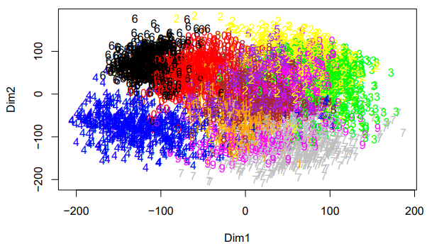
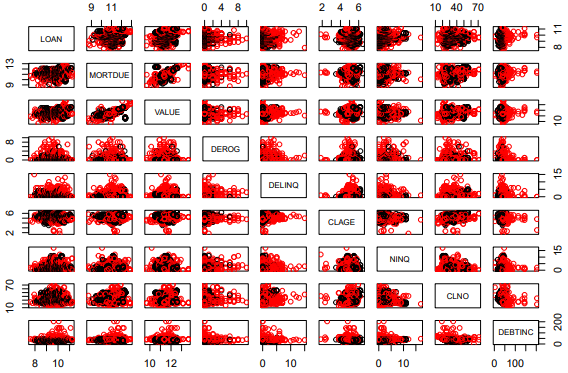
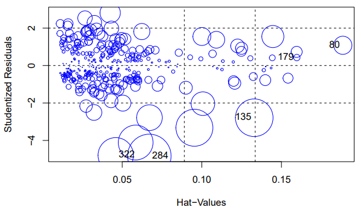
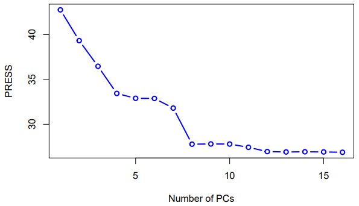
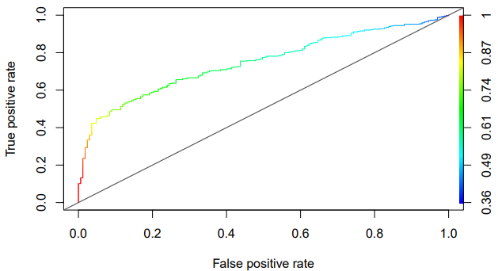

Cesar Vazquez | Data Science & Machine Learning Projects
In this project I perform some basic data compilation and manipulation,
exploratory data analysis, PCA, multidimensional scaling (MDS), and tSNE.
Tasks:
- Read both the training and the test data set into R.
- Perform Exploratory Data Analysis (EDA) using a heatmap.
- Run PCA with with and obtain the scree plot.
- Try out classical MDS with a Manhattan-based distance matrix.
- Apply tSNE to the data.

In this project I perfrom Agglomerative Clustering, K-means clustering, and Hierarchical Clustering.
Tasks:
- Read the data into R. List the missing rate (in percentage) for each variable.
- Do some data cleaning by replacing missing values for both JOB and REASON with default constant “Unknown”.
- Perform the (natural) logarithm transformation.
- Impute all the remaining values.
- Obtain a distance matrix.
- Cluster the data by excluding the variable BAD.
- Make a two-way contingency table that compares two clustering results.
- conduct some post hoc analysis using various numerical and graphical tools.

In this project I investigate if there are certain variables that determine whether someone will default on a loan. I perfrom Agglomerative Clustering, K-means clustering, and Hierarchical Clustering.
Tasks:
- EDA by obtaining the histograms of both salary and the logarithm (natural base) of salary.
- Inspect for any missing data.
- Partition the data and apply variable selection methods.
- Output the necessary fitting results for each best model and apply it to the test data.
- Refit the final model using the entire data.
- Check normality, homoscedasticity, independence, linearity as well as detecting outliers and assessing multicollinearity.
- Apply the final model to predict the log-salary for the new data set.

In this In this project, we analyze communities and crime data using 5 different regression models.
Tasks:
- Prepare data by removing, imputing, or replacing appropriately.
- Conduct some EDA, mostly by checking the distribution of the target variable.
- Partition the data.
- Do predictive modeling with LASSO Regression.
- Do predictive modeling with Principal Components Regression.
- Try Partial Least Squares Regression.
- Finally, try Weighted Orthogonal Components Regression as well as Stagewise Regression.
- Test and compare the models.

In this project I we consider the Indian Liver Patient dataset, use regression models, and compare the models using an ROC curve.
Tasks:
- Prepare and clean the data via listwise deletion or imputation.
- For each categorical predictor I use chi squared-test of independence to assess its association with the binary response liver.
- For other types of predictors I use either two-sample t test.
- Applying a threshold significance level alpha = 0.20, I exclude predictors that are associated with a p-value larger than that from the subsequent logistic model fitting.
- Fit the full model with all predictors that have passed the screening.
- Select the best model stepwise selection at the aid of BIC.
- select the best model with one of the regularization methods with different types of penalties.
- Compute the jackknife predicted probabilities from every model.
- Plot their ROC curves and find their AUC values.
- Interpret the results within the liver disease diagnostic context.
